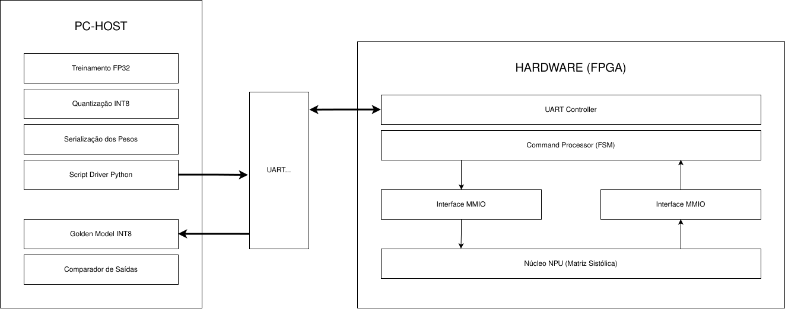

Software¶
Este capítulo descreve como programar a NPU: o mapa de registradores e a forma de uso de cada mecanismo, seguidos do ambiente de hardware-in-the-loop, em que um computador controla a NPU na FPGA pela UART.
API de programação¶
Visão Geral¶
A NPU opera como um periférico mapeado em memória (MMIO) com arquitetura Output Stationary. Isso significa que os acumuladores internos mantêm os resultados parciais (Princípio da Localidade) até que o processamento completo de um vetor (Tile) seja concluído ou que um comando de DUMP seja enviado.
Mapa de Registradores (Base Address + Offset)¶
| Offset | Registrador | Acesso | Descrição |
|---|---|---|---|
0x00 |
STATUS | RO | Estado do núcleo. |
0x04 |
CMD | WO | Comandos de disparo e controle de ponteiros. |
0x08 |
CONFIG | RW | Tamanho da execução (K_DIM). |
0x10 |
WRITE_W | WO | Porta de escrita de Pesos (Weights). |
0x14 |
WRITE_A | WO | Porta de escrita de Ativações (Inputs). |
0x18 |
READ_OUT | RO | Porta de leitura de Resultados. |
0x1C |
WRITE_IMG | WO | Porta da imagem crua do im2col (4 pixels int8 por palavra). |
0x20 |
W_BASE | RW | Base da região de Pesos na RAM local (reset = 0). |
0x24 |
I_BASE | RW | Base da região de Inputs na RAM local (reset = 0). |
0x28 |
IM2COL_EN | RW | Bit 0: Inputs gerados pelo im2col em hardware. |
0x2C |
IM2COL_GEOM | RW | [7:0] IN_W, [15:8] OUT_W, [19:16] STRIDE, [23:20] KW. |
0x30 |
IM2COL_NWIN | RW | Total de janelas da convolução. |
0x0C |
DESC | WO | Programa do processador de comandos (descritores de camada). |
0x34 |
TILES | RW | [15:0] tiles por START (0/1 = um); bit 16 RW_W; bit 17 RW_I; bit 18 BIAS_PER_TILE; [21:19] banco de bias do primeiro tile. |
0x38 |
OUT_CFG | RW | Bit 0 ORDER (linhas em ordem); bit 1 UNPACK (uma ativação por palavra); bit 2 LOOP (saída na RAM de Inputs). |
0x3C |
MODE | RW | Bit 0 GEMV; bit 1 STREAM_I; bit 2 STREAM_W; bit 3 OVERLAP (ver abaixo). |
0x80–0xFC |
BIAS | RW | Banco de bias: 8 tiles × 4 colunas (0x80 + 16·tile + 4·coluna). |
0x40 |
QUANT_CFG | RW | Bits [4:0]: Shift Amount. Bits [15:8]: Zero Point. |
0x44 |
QUANT_MULT | RW | Multiplicador Inteiro da PPU. |
Detalhe dos Registradores¶
CMD (0x04) - Command Register¶
Este registrador controla a Máquina de Estados e os Ponteiros de DMA. É Write-Only.
| Bit | Nome | Descrição |
|---|---|---|
| 0 | RST_DMA_PTRS |
Leva os ponteiros de escrita de Pesos e Inputs para as suas bases (W_BASE/I_BASE). Usado no início de uma nova inferência. |
| 1 | START |
Inicia a execução da Matriz Sistólica. |
| 2 | ACC_CLEAR |
1: Limpa os acumuladores (Outputs) antes de iniciar. 0: Acumula sobre o valor anterior (Tiling Temporal). |
| 4 | RST_W_RD |
Leva apenas o ponteiro de leitura de Pesos para W_BASE. |
| 5 | RST_I_RD |
Leva apenas o ponteiro de leitura de Inputs para I_BASE. |
| 6 | RST_WR_W |
Leva apenas o ponteiro de escrita de Pesos para W_BASE (Recarga parcial). |
| 7 | RST_WR_I |
Leva apenas o ponteiro de escrita de Inputs para I_BASE. |
STATUS (0x00) - Status Register¶
| Bit | Nome | Descrição |
|---|---|---|
| 1 | DONE |
1: Processamento concluído. O Host pode ler os resultados ou iniciar novo tile. |
| 3 | OUT_VALID |
1: A FIFO de saída contém dados válidos para leitura. |
Estratégia de Tiling (Output Stationary)¶
Graças ao reuso da memória interna e do princípio da localidade, redes maiores que o array físico (4x4) podem ser computadas em partes com menor impacto no tráfego de dados no barramento:
- Carregue o Input Vetor completo uma única vez.
- Carregue o primeiro bloco de Pesos.
- Execute (Output Stationary acumula o resultado parcial).
- Para o próximo bloco:
- Envie
CMD_RST_WR_W(reseta ponteiro de escrita de pesos) - Carregue novos pesos
- Envie
CMD_STARTcomRST_W_RD | RST_I_RD(para reler o input e acumular no mesmo output).
- Envie
Pesos Residentes (W_BASE / I_BASE)¶
Os pesos de uma rede treinada não mudam entre inferências. Com os registradores de base, cada camada ocupa a sua própria região da RAM de pesos e é carregada uma única vez; a cada inferência, apenas as ativações trafegam pelo barramento.
- Na carga do modelo, para cada camada: escreva a base da região em
W_BASE, envieCMD_RST_WR_We transfira os pesos pelaWRITE_W. - Na inferência, antes de cada camada: escreva a base da região em
W_BASE, envieCMD_RST_WR_I, transfira os Inputs e dispare comCMD_START | RST_W_RD | RST_I_RD.
Como as bases valem zero após o reset, o software que não as usa mantém o comportamento original.
im2col em Hardware¶
Em convoluções, a NPU monta as janelas sozinha a partir da imagem crua, sem que a CPU precise desdobrar a imagem (im2col) e empacotar as janelas.
- Envie
CMD_RST_WR_Ie transfira a imagem pelaWRITE_IMG(4 pixels int8 por palavra, em ordem de varredura). - Configure
IM2COL_GEOM(largura da imagem, janelas por linha da saída, passo e largura do kernel) eIM2COL_NWIN, e ligueIM2COL_EN. - Escreva
CONFIG = KW x KH(taps por janela) e dispare um START por grupo de 4 janelas: o primeiro comRST_I_RD(volta à janela 0) e os seguintes sem ele. A linhardo array processa a janela4g + r; as janelas além deIM2COL_NWINleem zero. - Desligue
IM2COL_ENantes de camadas que leem a RAM de Inputs.
Restrições: OUT_W >= 4, IN_W <= 255, imagem de até 1 KB (generic IMG_WORDS do npu_im2col). O im2col não é usado junto com o Double Buffering.
Sequenciador de Tiles e Saída por DMA¶
Um único START pode executar vários tiles, tirando a CPU do laço de controle:
TILES = N | RW_W | RW_I:Ntiles por START. A cada tile,RW_Wvolta a leitura dos Pesos aW_BASE(os mesmos pesos para várias janelas, como numa convolução) eRW_Ivolta a dos Inputs aI_BASE(as mesmas entradas para vários blocos de neurônios, como numa densa). O que não volta segue de onde parou.OUT_CFG:ORDERentrega as linhas na ordem 0..3 (sem ele, a última linha sai primeiro);UNPACKentrega uma ativação por palavra (estendida com zeros), o formato que a RAM de Inputs de uma densa seguinte espera.- Os acumuladores se zeram sozinhos no drain de cada tile; o drain só começa quando o tile inteiro cabe na FIFO (64 palavras).
- Enquanto a NPU está BUSY, uma leitura da
READ_OUTcom a FIFO vazia segura o barramento até chegar o próximo resultado. Com o DMA em origem fixa (DMA_CTRL_FIXED_SRC,hal_dma_drain), a saída vai para a RAM em paralelo com o cômputo.
O bias é o mesmo para todos os tiles de uma sequência; camadas que trocam o bias por bloco de neurônios continuam com um START por bloco.
Modo GEMV (Densa com Lote 1)¶
Com uma única amostra, a camada densa é um produto matriz-vetor, e o modo normal só aproveita 1 das 4 linhas do array. Com MODE.GEMV = 1:
- A palavra de entrada
ttraz as features4t..4t+3(byter= feature4t + r), e a linharacumula as featuresk ≡ r (mod 4). - A coluna
cacumula o neurônio4j + cdo blocoj; cada PE recebe o seu próprio peso a cada ciclo, lido de 4 palavras consecutivas da memória de pesos (organizada em 4 bancos). - Os pesos seguem o layout de sempre (palavra
kdo blocoj= neurônios4j..4j+3da featurek), a partir de uma base múltipla de 4. CONFIG = K/4(ciclos por bloco). As 4 somas parciais de cada coluna são somadas antes da PPU, que entrega uma palavra por bloco (bytec= neurônio4j + c).- Com
TILES = blocos | RW_I | BIAS_PER_TILE(bit 18), todos os blocos rodam num único START, cada um com o seu vetor de bias (0x80 + 16·j).
Streaming, Tiles Encadeados e Fusão de Camadas¶
- Streaming (
MODE.STREAM_I/STREAM_W): o START pode vir antes da carga dos dados. Cada leitura do Controller só é emitida quando o seu dado já foi escrito: a entradakprecisa deI_BASE + k < ponteiro de escrita(ou, com o im2col, todos os pixels do tap corrente já escritos na portaIMG), e o peso, da mesma forma. O DMA da carga corre então em paralelo com o cômputo. Os ponteiros de escrita devem ser zerados (RST_WR_I/RST_WR_W) antes do START. - Tiles encadeados (
MODE.OVERLAP): os tiles de uma sequência seguem sem esvaziar o array. Cada PE guarda o resultado do tile que terminou num acumulador sombra e recomeça do zero; a marca de fim de tile viaja com as ativações e, ao sair pela borda direita da linhar, faz a linharser lida. As linhas saem na ordem 0..3 (com ou semORDER);UNPACKnão é suportado nesse modo. ExigeCONFIG > 4(abaixo disso, a execução volta ao modo normal). - Fusão de camadas (
OUT_CFG.LOOP): a saída vai para a RAM de Inputs da NPU, a partir deI_BASE, em vez da FIFO. A camada seguinte (ex.: a densa em GEMV, cuja entrada é exatamente a saída da Conv com 4 canais por palavra) lê dali, sem passar pela RAM principal. - A FIFO de saída tem 256 palavras.
Biases Residentes e Descritores de Camada¶
- Biases residentes: o campo
TILES[21:19]escolhe o banco de bias do primeiro tile. Cada camada usa os seus bancos (ex.: Conv no banco 3, densa nos bancos 0..2), gravados uma única vez na carga do modelo. - Descritores de camada: a porta
DESC(0x0C) alimenta uma fila (128 palavras) de um processador de comandos dentro da NPU. O programa é montado uma vez na RAM e enviado por DMA a cada inferência: WRITE— cabeçalho0x1000_00rr(rr= offset do registrador) seguido do dado;WAIT—0x2000_0000: espera a execução disparada pelo último START terminar;END—0x3000_0000: fim do programa (STATUSbit 4 = 1 quando a fila esvazia).- Regras: todo START deve ser seguido de um
WAIT; durante um programa, escritas de configuração pelo barramento esperam o programa terminar (as portas de dados continuam livres); com a fila cheia, a portaDESCsegura o barramento (nada se perde). - A
O_DATAtambém segura o barramento enquanto um programa executa, então a CPU (ou um DMA) pode ler os resultados sem consultar o status. Cuidado: com uma leitura daO_DATApresa, o crossbar mantém a NPU ocupada por aquele mestre; leia a saída só depois de enviar todas as entradas.
Hardware-in-the-loop¶
O conceito de Hardware-in-the-Loop (HIL) permite que validemos a NPU em seu ambiente real (a FPGA) enquanto ainda mantemos o controle do fluxo de dados através do PC (Host).

Protocolo de Comunicação Serial
A interface entre o PC e a FPGA é feita através de uma conexão UART de alta velocidade (921.600 bps). O módulo UART Controller no hardware em FPGA é responsável por comunicar os pacotes que são comandos a serem processados pela NPU ou resultados obtidos por uma operação.
Arquitetura do Driver em Python¶
Os scripts na pasta sw/ (como o fpga_driver.py) atuam como o "cérebro" do sistema. Eles executam a seguinte lógica sequencial:
Quantização (FP32 para INT8)¶
A NPU não processa ponto flutuante para economizar área de silício. O script em Python pega os pesos de uma rede treinada (Keras/PyTorch) e aplica uma conversão linear afim para INT8 (valore entre -128 e 127). Os parâmetros de escala (Scale) e ponto zero (Zero Point) são extraídos e enviados para a NPU.
Protocolo MMIO sobre UART¶
O driver não manda bytes aleatórios. Ele empacota os dados endereçando registradores específicos da NPU (Memory-Mapped I/O).
-
Para enviar pesos, o Python manda os bytes empacotados apontando para o endereço
REG_WRITE_W(0x10). -
Para enviar os dados da imagem (ativações), ele aponta para
REG_WRITE_A(0x14).
Execução da Inferência¶
Após carregar os pesos:
-
O Python escreve a configuração de execução no
CSR_CONFIG(0x08). -
Envia um pulso de Start no
CSR_CMD(0x04). -
Fica fazendo Polling (checando repetidamente) o registrador
CSR_STATUS(0x00) até que a flag deDONEretorne verdadeira. -
Lê os resultados finais no registrador
REG_READ_OUT(0x18).
Como rodar o HIL¶
Com a FPGA programada e conectada na porta USB do seu PC, você pode executar as aplicações de validação real: